Mentoring for future programming languages researchers
ACM SIGPLAN Programming Languages Mentoring Workshop
A one-day workshop that helps students navigate programming languages research, meet mentors, and step confidently into the collocated conference.
- Conference-ready Guidance on getting the most out of POPL, PLDI, ICFP, or SPLASH.
- Personal mentoring Small-group conversations and Q&A with researchers.
- Technical content Introductory PL research talks, deep dives, and panels to help you follow the main conference.
- Inclusive community Meet students from around the world who share your interests.
- Travel grants Support from our sponsors for many attendees.
Talks from previous PLMWs
Past PLMW sessions to give you a feel for the content and format.
What you’ll experience at PLMW
PLMW is a one-day workshop for students considering or starting a PhD in programming languages. The day is built to help you arrive prepared, confident, and connected.
- Conference preparation: how to get the most from the collocated conference
- Programming languages research primers from experts
- Technical talks introducing current research areas
- Soft-skills sessions on thriving in grad school and research
- Panels and Q&A with researchers
- Small-group mentoring with established researchers
- Social time to meet fellow students and mentors
Who can attend?
PLMW is open to students worldwide, from undergraduates to PhD students, who are interested in programming languages.
- Exploring whether a PL PhD is for you
- Planning a PL PhD and looking for the right fit
- Early in a PL PhD and eager to start strong
Our sponsors provide funding for travel grants for students, which include economy travel (up to a distance-based cap), 1 day of PLMW + 3 days of the main conference registration, 5 hotel nights, and conference lunches and coffee breaks.
Conference access included
PLMW is collocated with the main ACM SIGPLAN programming languages research conferences:
- POPL (Principles of Programming Languages)
- PLDI (Programming Language Design and Implementation)
- ICFP (International Conference on Functional Programming)
- SPLASH (Systems, Programming, Languages, and Applications: Software for Humanity)
You'll see new research presented, meet researchers in the field, and put your PLMW preparation into practice. A PLMW travel grant includes access to the conference.
FAQ
Can I attend PLMW without a travel grant? You can attend PLMW by registering at the conference website and paying the registration fee using your own funding. If your university has funding available to attend conferences, please use that instead of applying for a travel grant so we can use our limited funding for students in need.
I'm not from a famous university. Can I still get funding? Absolutely! We want to encourage students from all backgrounds to attend PLMW. We have a limited number of travel grants available for students who need financial support, and we prioritize students who would not otherwise be able to attend the conference.
What sources of funding are available? PLMW has a limited number of travel grants available for students who need financial support, which typically cover economy travel (up to a distance-based cap), 1 day of PLMW + 3 days of the main conference registration, 5 hotel nights, and conference lunches and coffee breaks. You can also apply for student volunteering (which typically covers conference registration, see the conference website for more information) or SIGPLAN PAC funding if you are presenting a paper at the conference.
I have a disability. Can I attend? Yes! The conference venue is chosen to be accessible to all attendees. If you have any specific requirements, please let us know when you register so that we can make sure you have everything you need.
I don't know anything about programming language theory. That's okay! PLMW is designed to be accessible to students at all levels. You don't need to be an expert in programming languages to attend. The talks are designed to introduce you to new ideas and help you understand the current state of the field.
Will there be an exam? No! PLMW is not a course, and there are no exams. The goal of the workshop is to introduce you to new ideas and help you prepare for a career in programming languages research. There are no grades, and you don't need to have any prior knowledge to attend.
Who can participate in PLMW? PLMW is an international educational event open to all students interested in programming languages research. We welcome participants from universities worldwide and from all academic backgrounds. The workshop provides equal opportunity for learning and networking to students who demonstrate interest and potential in programming languages, regardless of their background or circumstances. We strive to create a supportive academic environment for all attendees. The associated conference provides various networking opportunities and social events that are great ways to meet other students and researchers. See also the SIGPLAN Statement on Inclusivity and SIGPLAN CARES.
What topics are covered at PLMW? Topics include research areas in programming languages, career development, networking, and skills for succeeding in graduate school and research.
Is there a fee to attend PLMW? Yes, there is a fee to attend PLMW that you can find on the corresponding registration pages. This cost is covered for students who receive financial support.
Will I have a chance to interact with established researchers? Yes, PLMW or the collocated conference includes a mentoring session where you can meet and talk with established researchers in the field. This is a great opportunity to ask questions, get advice, and make connections. You can also meet researchers at the associated conference.
Is there a dress code for PLMW? No, there is no dress code for PLMW. You should wear whatever makes you feel comfortable. Formal attire is allowed but not at all required. At the associated conference, you will see many people give their research presentation in t-shirts.
Do I need to prepare anything before attending? No, you do not need to prepare anything before attending PLMW.
What should I bring to PLMW? You do not need to bring anything to PLMW. If you want to take notes, you can bring a pen and notebook if you like, but you can also get those from the sponsor booths at the conference.
Do you still provide mentoring after PLMW? If you are interested in a long-term mentoring for programming languages researchers, check out SIGPLAN-M.
Upcoming PLMW Events
More details on each event will be posted on the corresponding conference website:
- PLMW @ POPL 2026 (Sunday 11 - Saturday 17 January 2026 • Rennes, France) Details »
- PLMW @ PLDI 2026 (Mon 15 - Fri 19 June 2026 • Boulder, Colorado, United States) Details »
- PLMW @ ICFP 2026 (Mon 24 - Sat 29 August 2026 • United States) Details »
- PLMW @ SPLASH 2026 (Sat 3 - Fri 9 October 2026 • Oakland, California, United States) Details »
You can attend PLMW with your own funding, or by applying for financial support. Funding applications typically open 3–4 months before each conference, and can be found on the corresponding conference website.
- PLMW @ ICFP/SPLASH 2025 (Singapore)
- PLMW @ PLDI 2025 (Seoul, South Korea)
- PLMW @ POPL 2025 (Denver, Colorado, United States)
- PLMW @ SPLASH 2024 (Pasadena, California, United States)
- PLMW @ ICFP 2024 (Milan, Italy)
- PLMW @ PLDI'24 (Copenhagen, Denmark)
- PLMW @ POPL'24 (London, United Kingdom)
- PLMW @ SPLASH'23 (Cascais, Portugal)
- PLMW @ ICFP'23 (Seattle, Washington, United States)
- PLMW @ PLDI'23 (Orlando, Florida, United States)
- PLMW @ POPL'23 (Boston, Massachusetts, United States)
- PLMW @ SPLASH'22 (Auckland, New Zealand)
- PLMW @ ICFP'22 (Ljubljana, Slovenia)
- PLMW @ PLDI'22 (San Diego, California, United States)
- PLMW @ POPL'22 (Philadelphia, Pennsylvania, United States)
- PLMW @ SPLASH '21 (Chicago, IL, United States)
- PLMW @ ICFP'21 (virtual)
- PLMW @ PLDI'21 (virtual)
- PLMW @ POPL'21 (virtual)
- PLMW @ SPLASH'20 (virtual)
- PLMW @ ICFP'20 (virtual)
- PLMW @ PLDI'20 (virtual)
- PLMW @ POPL'20 (New Orleans, LA, United States)
- PLMW @ SPLASH'19 (Athens, Greece)
- PLMW @ ICFP'19 (Berlin, Germany)
- PLMW @ PLDI'19 (Phoenix, AZ, United States)
- PLMW @ POPL'19 (Lisbon, Portugal)
- PLMW @ SPLASH'18 (Boston, MA, United States)
- PLMW @ ICFP'18 (St. Louis, MO, United States)
- PLMW @ PLDI'18 (Philadelphia, PA, United States)
- PLMW @ POPL'18 (Los Angeles, CA, United States)
- PLMW @ SPLASH'17 (Vancouver, Canada)
- PLMW @ ICFP'17 (Oxford, United Kingdom)
- PLMW @ PLDI'17 (Barcelona, Spain)
- PLMW @ POPL'17 (Paris, France)
- PLMW @ SPLASH'16 (Amsterdam, the Netherlands)
- PLMW @ ICFP'16 (Nara, Japan)
- PLMW @ PLDI'16 (Santa Barbara, CA, United States)
- PLMW @ POPL'16 (St. Petersburg, FL, United States)
- PLMW @ SPLASH'15 (Pittsburgh, PA, USA)
- PLMW @ ICFP'15 (Vancouver, Canada)
- PLMW @ POPL'15 (Mumbai, India)
- PLMW @ POPL'14 (San Diego, CA, United States)
- PLMW @ POPL'13 (Rome, Italy)
- PLMW @ POPL'12 (Philadelphia, PA, United States)
Stories
I attended my first PLMW in 2017, having previously taken one programming languages course. I definitely did not understand most of the technical talks given at PLMW. However, since the talks introduced different areas of research, I felt much more prepared for the ICFP research talks. I also met many of my current friends in my peer group at PLMW; friends I still see today at various conferences.
My experience at PLMW greatly influenced my path since then. I've attended every ICFP since 2017 and gave a talk at the co-located Scheme Workshop in 2019. The talk I gave was better because of the helpful tips from Derek Dreyer's talk during my first PLMW. I also applied to graduate school with a special interest in compiler correctness because of Amal Ahmed's talk during this same PLMW. I am currently finishing my first year of my Master's/PhD program researching type preserving compilation because of PLMW (and ICFP in general, as I met my current advisor at ICFP 2018).
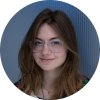
PLMW changed my life and my career trajectory. I honestly applied to POPL on a whim one year because I was working a low-wage job in Los Angeles (where POPL was being held) and being a PhD student volunteer was the only way I could afford to attend. ACM conferences can be expensive. It was only after volunteering at that conference and talking to Ranjit Jhala that I had it in my head that I might pursue a PhD. But in what, and how? And no one I work with has a PhD or gone to grad school for Computer Science, much less PL. This is where PLMW came in. Almost immediately, I met someone who had not only travelled a similar path, but openly engaged with me, and others who told me to follow up with them for help and mentorship applying to schools. Others I met even encouraged me to submit a paper or collaborate on a research paper with them. I had never written a single research paper before. I went from Pallet Jacks and helping 53 foot trucks back into a facility, hearing the sound of welding and machining all day, while sitting at a computer trying out small programmes in LISP, to being a fully-funded PhD student within a year. I owe a lot of that to PLMW.
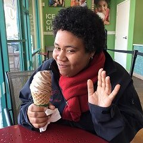
I went to PLMW at the end of my 5-year degree in mathematics and computer science, at the time when I was pondering whether academia — and more concretely PL — was for me. It helped me fight my biggest two fears at that moment: is the atmosphere good? is PL a narrow topic? I was surprised about the breadth of PL as an area and the many relations to other disciplines. But even more about how accessible and open everybody was, not only at PLMW itself, but at the rest of the conference afterwards.
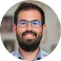
Virtual PLDI 2020 gave me a chance to attend PLMW for the first time. For a first-timer like myself, it was incredibly enlightening to see how experienced people in the PL field were sharing their research experience and other stories of building their (research) career in non-technical, everyday English during PLMW mentoring sessions. I highly recommend PLMW to anyone who is not sure where and how to begin research in the PL field, or how to prepare for their graduate program and/or research career. Speakers and mentors you will come across via PLMW are truly inspiring and very much willing to address any of your questions or concerns. I've been very happy to be left with actionable information and a long to-do list!
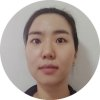
I went to ICFP in St. Louis (2018) funded by PLMW. That was my first time attending a conference, ever, so I wasn't entirely sure what to expect. Surprise! It was GREAT!! Honestly there were so many highlights but the biggest thing for me was finally realizing that there's a whole community out there of like-minded folks who are all very excited about PL, but everyone in their own unique way. It's really cool to find out that folks all over the world also care about these problems, and that it's not just you and your advisor working on this niche thing. Also, some of the conversations I had with PLMW attendees have changed, and shaped my own research agenda and aspirations, so I can't emphasize enough how enriching some of those interactions were. Overall, attending PLMW helped me find my place in this community, and made me excited to continue being a part of it.
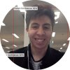
I attended my first PLMW at POPL 2013 in Rome. At the time, I was an undergraduate who was considering what to do next after graduation. By the time PLMW and POPL were over, I knew I wanted to pursue a PhD and for the first time, I had the confidence to believe that it might be possible. The mentorship at PLMW was invaluable to me. For example, I did not understand most of the talks at POPL which definitely would have discouraged me if I had not learned at PLMW that this was normal for your first academic conference. Seven years on, I have now finished my PhD and I am still in touch with some of the friends I made at PLMW.
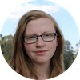
Sponsors
The following sponsors have supported PLMW in 2025:
 National Science Foundation
National Science Foundation
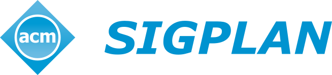
ACM SIGPLAN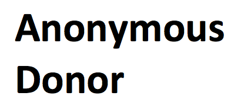
Anonymous donor Jane Street
Jane Street
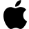
Apple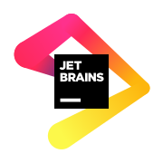
JetBrains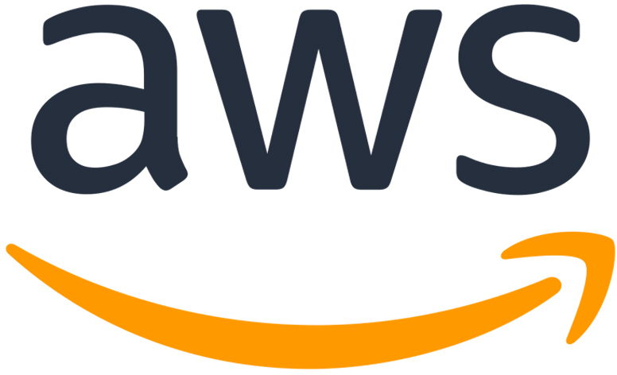
Amazon Web ServicesInterested in sponsoring PLMW?
More information on the corresponding conference website.
PLMW steering committee 2025
- Chair: Robbert Krebbers
- Chair-elect: Anitha Gollamudi
- Previous chair: Lukasz Ziarek
- PLDI 2025 representatives: Umang Mathur, Jingbo Wang
- ICFP 2025 representatives: Ningning Xie, Conrad Watt
- SPLASH 2025 representatives: Lucas Bang, Milijana Surbatovich
- POPL 2026 representatives: Yannick Forster, Andrew Hirsch, Jenna DiVincenzo
- Online presence: Jules Jacobs
- SIGPLAN EC representative: Brigitte Pientka
- Ad-hoc members: Kathleen Fisher